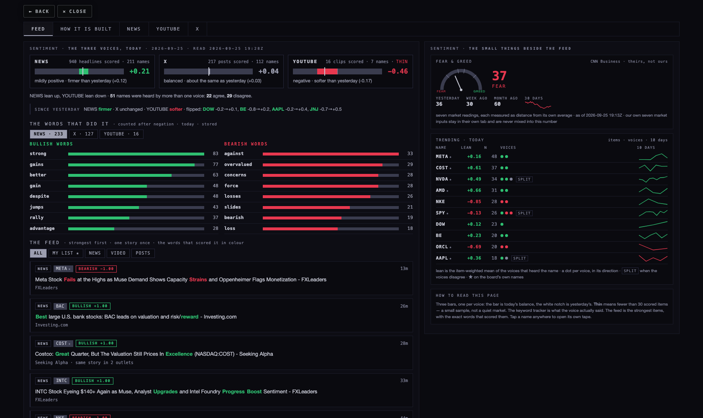
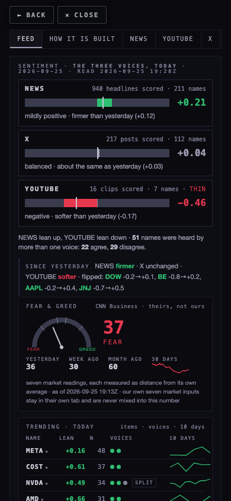
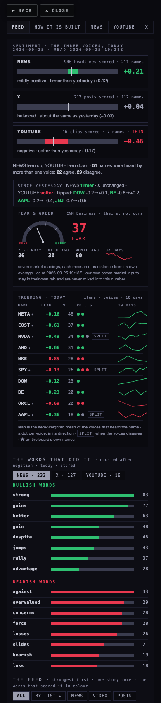

You called the room a data dump, and it is one. This page does two things: it walks through exactly how a sentiment number is made here, stage by stage with real items flowing through, and it shows the room redrawn as a feed you can read in a glance. Nothing shipped. The mockup is a live page built from today's stored rows, so what you see is what the data can already show.
candidate/sentiment-feed-20260925 off origin/hub/release-20260923 at 6b43a52. Files: this page, mockup-feed.html (the live mockup), its builder build-mockup.mjs, the data it was built from, the screenshots, and one test. Every number below was read from the live database and the public gauges on 25 Sep between 19:25Z and 19:28Z, read-only, with the page's own public key.The OVERVIEW tab stacks, in one scroll: a mood line, a per-ticker tape, that day's stories, a "news-driven market" number that refuses to exist yet, six public gauge cards, a seven-row table of our own market inputs with CNN's beside them, a "measuring stick" table of the three voices, three voice cards with lean bars, a keyword card, a "is the X feed current" card, breadth twice, and four explanatory cards. Each piece was asked for in an earlier session and each is honest. Together they are twelve things fighting for the same eye, and the reading never comes first.
"See, this keyword tracker is better than everything else in this section. If you keep it simple to me, with little visuals like this, that would be great."
That tracker is the model for the whole redesign in section 4. First, the mechanics.
There are three voices (news, YouTube, X) and one separate thing (fear & greed). All three voices are built the same way: collect items, look every word up in a list, score the item as the balance of the words that fired, store the item with its words, roll the items up per ticker per day, roll the days up per voice. Nothing in any of it is an AI read. No model reads a headline or a transcript; a word is either on a list or it is not. Every number in this room is a keyword count, not an AI read.
| voice | what is collected | into | how often | right now |
|---|---|---|---|---|
| news | headline, snippet, site, URL, one row per ticker the story is filed under | news | the news feed jobs, all day; the scorer follows every 10 minutes (live pass, newest 600 first) | 506,297 headlines · 4,738 in the last 24 h |
| YouTube | videos from ticker searches and the subscribed channels: title, description, channel | youtube_videos | the YouTube collector's sweep | 11,792 videos · 744 ticker-tagged in 7 days |
| YouTube transcripts | the English caption track of a video | youtube_transcripts | a launchd job on the MacBook, every 30 min (not installed) | 0 rows |
| X | the posts on your Trading list, published as one file at /api/xfeed | the blob feed | the browser collector, nine times a day | 19,276 posts · 126 handles · newest 18:29Z today |
The list is a file: data/news-lexicon/lm-headline-v1.json, method lm-v1. It is the Loughran-McDonald finance dictionary (354 positive words, 2,355 negative, built from 10-K filings), plus 31 positive and 36 negative price verbs that headlines use and filings never do (beats, surges, plunges, downgrade), plus 25 negators. Because the dictionary carries 6.6 negative words for every positive one, a score is never a count of hits, always a balance. The sha of the file that scored each row is stored beside the row.
social_sentiment, 63 rows, last written 23 Sep 00:37Z). So the same X post can carry two different numbers on the same screen, and the keyword tracker you liked counts words from a list the stored rows never used. The feed in section 4 uses the stored rows and one list only.Every word in the item is looked up. If a negator sits in the three words before a match, the match is flipped and the flip is recorded. The score is (positive − negative) ÷ (positive + negative), so it always lands between −1 and +1. An item with no listed word gets no score, not a zero. An item that asks a question is scored and then left out of every total. A real headline from today, filed under META:
And one where a negator did its work, because this is the part people doubt:
Right now: 7,681 headline rows (3,136 carry a score, 41 %; the rest had no listed word), 830 video rows, 4,319 post rows.
All of that ticker's scored items for one New York day and one voice are averaged: sentiment_ticker_daily, keyed by day, ticker and source, carrying the mean, how many items were seen, how many scored, how many leaned up and down, how many had no word, how many asked a question, and the top eight words with a sentence each. This is the row the tape draws, and the row a 90-day history lives in. It is rebuilt from all stored items for that day every time a function touches the day, so it never undercounts because of the slice that happened to be read. Today: NVDA news +0.49 over 34 items, NVDA X +0.22, NVDA YouTube −1.00 over one clip.
The voice's reading is the item-weighted mean of its ticker rows for the day (marketRead in the shared module). Tickers are not equalised, so a name with forty stories moves it more than a name with two. Today at 19:28Z, from the stored rows:
| voice | today | items scored | names | yesterday | in words |
|---|---|---|---|---|---|
| news | +0.207 | 940 of 2,512 | 211 | +0.085 | mildly positive, firmer than the day before |
| X | +0.036 | 217 of 452 | 112 | +0.008 | balanced, about where it was |
| YouTube | −0.458 | 16 of 45 | 7 | −0.290 | negative, softer, and thin: 16 items is a sample, not a market |
Across the 273 names heard today, 51 were heard by more than one voice; 22 agree on direction and 29 disagree. That disagreement is the most useful single number on the page and today's room does not print it.
The Hub reads the daily rows (45 days back, SN_STORE_DAYS), the item rows for the picked day, and, for the X and YouTube cards, re-scores the raw feed and the video titles in the browser with the second list. The redesign stops the browser scoring and reads the store only.
sample_src = title, and a title is written to be clickedThe function that would read transcripts is deployed and ready (sentiment-youtube, every 6 hours at :25, 7-day window, 800 clips a pass). It scores the title only because there is nothing else to read. Until the transcript job runs on a Mac that stays awake, "YouTube" on this page means "video titles".
The function reads the published feed only (never a browser, never your Mac), every 2 hours at :40, the last 3 days, and it says in its receipt when the collector is behind. The feed holds posts back to June 2023, so an X history of 90 days is one run away (section 5).
Two gauges are shown that other people publish: CNN's Fear & Greed (today 37, fear; 36 yesterday, 30 a week ago, 60 a month ago; its seven parts today: momentum 36, 52-week strength 0, breadth 0, put/call 58, volatility 50, junk bonds 61, safe havens 54) and alternative.me's index, which is for crypto, not stocks, and the card says so. Beside them the room computes seven market inputs of its own in the browser, from chart-API daily bars, CNN's way: each one is today's distance from its own average in units of how much it normally moves (50 + 25 × that distance, two deviations either way is the end of the dial; volatility and put/call inverted). These seven are not stored: they are recomputed every ten minutes in whichever browser is open and forgotten, which is why they have no history and the CNN card does. None of this is a word count, none of it is sentiment in the voices' sense, and Alan's 23 Sep ruling stands: there is no blended Scintilla fear & greed number.
Rows in sentiment_ticker_daily per source per day. A ticker-day is one name, one voice, one day; items are the headlines, clips or posts behind it; scored is how many carried a listed word.
| day | news ticker-days · items · scored | X ticker-days · items · scored | YouTube ticker-days · items · scored |
|---|---|---|---|
| 2026-09-16 | — | — | 1 · 2 · 1 |
| 2026-09-17 | — | — | 9 · 104 · 53 |
| 2026-09-18 | — | — | 9 · 101 · 45 |
| 2026-09-19 | — | — | 8 · 59 · 31 |
| 2026-09-20 | — | 38 · 40 · 37 | 9 · 70 · 35 |
| 2026-09-21 | — | 265 · 320 · 175 | 10 · 135 · 72 |
| 2026-09-22 | — | 285 · 564 · 329 | 9 · 103 · 45 |
| 2026-09-23 | 279 · 1,248 · 362 | 245 · 898 · 516 | 8 · 99 · 48 |
| 2026-09-24 | 350 · 3,921 · 1,469 | 216 · 774 · 385 | 9 · 112 · 54 |
| 2026-09-25 (to 19:25Z) | 304 · 2,512 · 940 | 163 · 452 · 217 | 8 · 45 · 16 |
done = 1000 < 1500 became true. One line to fix; until it is fixed, no history older than 23 Sep will ever appear.
X depth5 days (21 Sep 02:27Z → 25 Sep 18:23Z), 4,319 post rows, 666 in the last 24 hours. Live.
YouTube depth10 days, but 8 to 10 names a day, all from titles.
run receiptsEach function writes a receipt to app_config; that table refuses the public key (401), so run times were confirmed from the rows themselves, not the receipts.
The rule for every piece: small, dense, visual, in the idiom of the keyword tracker. Monochrome, no white, green and red only for direction. One list, the stored rows, no browser scoring. The mockup below is built from today's stored rows by build-mockup.mjs; open mockup-feed.html in this folder to use it.



The full-page captures at both widths are screens/mockup-1680.png and screens/mockup-390.png (no horizontal overflow at either).
| need | already there | to do |
|---|---|---|
| a row per ticker per day per voice, kept | sentiment_ticker_daily is keyed by day and never deleted | nothing; the reader asks for 45 days (SN_STORE_DAYS), change it to 90 |
| news back to 90 days | the backfill function, the resume table, a 5-minute schedule | fix the one-line "done" rule (page at 1,000, or treat only a reply under 1,000 as the end). At 1,000 headlines per 5-minute slice, 90 days (~340,000 headlines) takes about 28 hours of slices and rebuilds each day's rows as it goes |
| X back to 90 days | the feed already holds posts back to 2023; the function takes days= up to 30 | raise the cap to 90 and call it once with days=90; one pass, one afternoon. Then leave the 2-hour schedule at 3 days |
| YouTube back to 90 days | the function takes days= up to 60 | one call with days=60 gives 60 days of title readings; transcripts only from the day the transcript job is installed |
| the strip's trend without a big read | — | a new small table sentiment_voice_daily (day, source, score, items, tickers, bull, bear), written by the same day-rebuild that writes the ticker rows. 90 days × 3 voices = 270 rows per read instead of ~68,000. Additive migration, with its rollback |
| size | ~750 ticker-day rows a day today | 90 days ≈ 68,000 daily rows (small). Item rows with their words: ~4,000 a day, ≈ 360,000 over 90 days at well under a kilobyte each; fine for now, and the daily rows can outlive the item rows if it ever matters |
| our own seven market inputs over time | computed in the browser, stored nowhere | only if Alan wants that trend: a daily writer for them, separate from the voices |
supabase/functions/sentiment-news/index.ts and belongs to the build that follows this pick.index.html is unchanged on this branch); the mockup is a standalone page.Build the FEED tab as mocked and make it the room's first tab, keeping HOW IT IS BUILT, NEWS, YOUTUBE and X behind it; move today's OVERVIEW content (public gauges, our seven inputs, breadth) into a MARKET tab. Before the Opus build starts, do the four data fixes in section 5 in this order: the backfill "done" rule, the X 90-day pass, the 90-day reader, the voice-daily table. Score with one list only, the stored lm-v1 rows, and fold the slang and emoji additions from sc-social-v2 into the shared lexicon file as a supplement so nothing you asked for is lost.
Evidence: feed-data.json (today's rows and the computed reads), series.json (10-day series), cnn-fng.json (CNN's feed as read), the screenshots under screens/, and tests/sentiment-feed-deliverable.test.mjs. Test baseline on this branch is reported in the return message.